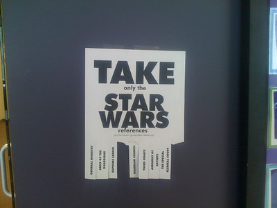

Useless Fliers

I found great humor in Josh Millard's Useless Fliers. I immediately copied his idea, and made several of my own fliers/flyers, and posted them at work. My only problem was that I didn't want anybody to know it was me. Here we are now, months later and I still don't think anybody truly figured it out (though some were pretty close). Either way, it doesn't matter, since I've stopped. Despite that, I wanted to share my creations with you people reading the internet. Print one of these things out. Cut where appropriate. Post it. Enjoy the results. As with other creations, I'd love to hear about your own. Some of my favorite (of my own creations) are:
- Free Pieces of Pi
- Free Peaces on Paper
- Take Only the Star Wars References (not the Iranian government references)
You can see the full listing of fliers, and download your copies to print out here. Several of them came about as inspired by McSweeney's Lists (a continual source of enlightenment). Happy posting!
Useless Fliers Files...
- Take Only the Primes - 2.pdf
- Take only the IKEA Products.pdf
- useless_fliers.jpg
- Take only the Horse Equipment.pdf
- Take only the Paint Colors.pdf
- Free Peaces on Paper.pdf
- Take only the Star Wars references.pdf
- Free Peaces on Pi.pdf
- Free pieces of Pi.pdf
- Take only the gladiators.pdf
- Free pieces of Wisdom.pdf
- Free Pieces of Invisible Paper.pdf
- Free pieces of 8.pdf
- Take only the IKEA Products - Round 2.pdf
- Take only the Retirement Communities.pdf
- Free Peaces on Paper - 2.pdf
- Free Pieces of Paper.pdf
{kind=link}
- Prior: Tile we Meet Again
- Next: T-SQL ASCII Text Art Generator